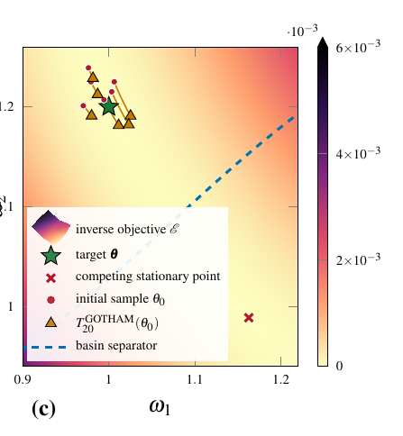

1
Learn
Train the NF on an auxiliary posterior supported by the local surrogate geometry.
probabilistic learning GAPS
Signal Processing Applications Group
GAPS
Signal Processing Applications Group
Learn a tractable posterior. Transport the physics.
A different division of labor between probabilistic learning and nonlinear physical refinement.
The contribution
The normalizing flow represents a tractable auxiliary posterior. GOTHAM then performs the nonlinear physical continuation without retraining the flow.
Train the NF on an auxiliary posterior supported by the local surrogate geometry.
probabilistic learning
Preserve each sample-specific inverse coordinate while replacing surrogate physics by nonlinear physics.
GOTHAM physical continuation
Track the density through the Jacobian and evaluate whether the transported posterior actually improves.
density-trackable resultInteractive
The paper distinguishes the inverse-objective landscape from the attraction basins. Start from any point in the displayed parameter region. The point itself is free; transport diagnostics are only reported for the validated test regimes used in the paper.

Evidence
Potential applications
Motivated applications, not validated claims of the current paper.
Acoustic, structural and vibroacoustic models with interpretable parameters.
Problems with correlated or strongly anisotropic parameter posteriors.
When a useful local surrogate is cheap but direct nonlinear posterior learning is not.
Select excitations and observations that expose identifiable directions before inference.
Multiple local transports where a single globally regular map is unrealistic.
Surrogate uncertainty combined with explicit nonlinear physical correction.
Code & reproducibility
experiments/scripts/
Generate numerical experiment outputs
Measurement geometry · auxiliary posterior · probabilistic transport · multibasin
Open folder ↗
paper_figures/scripts/
Render the exact published figures
Same data · panels · limits · labels · annotations · styles
Open folder ↗
# numerical results
python experiments/scripts/run_all.py
# exact publication figures
python paper_figures/scripts/reproduce_all_figures.pyAuthors & citation
F. Marcos-Macías, M.P. Daza-Llín, J. Gutiérrez, M. Cámara, J.L. Blanco · TECNIACÚSTICA 2026.